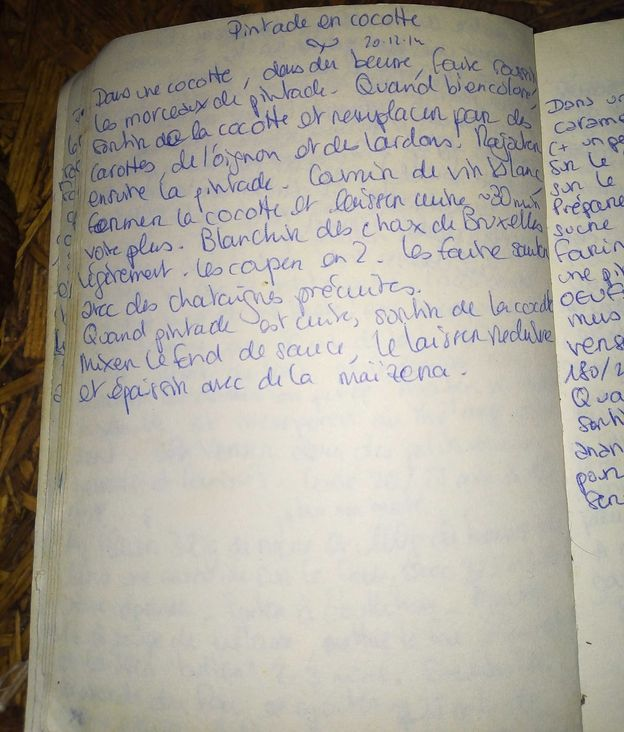
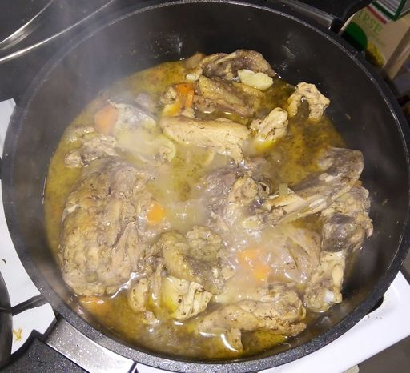
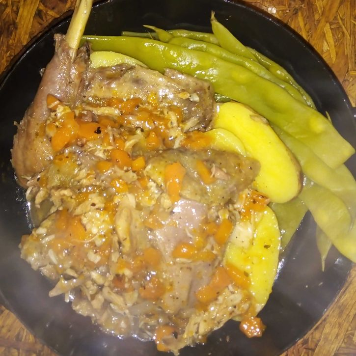

{kind=link}
The page in my very own encyclopedia culinaria for the original guinea fowl recipe I modified here.
The idea is fairly simple. First cut the guinea fowl in pieces and sauté them in a pot in olive oil, with salt and pepper. When golden, one can take them out of the pot and add oignons, carrots and garlic, with a bit of thyme. After a couple minutes (when the oignons start softening), add back the meat, and cover the whole thing with cider. Because I am in Berlin, I went with one of the OK ciders sold in supermarkets here, but naturally in France I would have gone for a cider from Brittany (a bit drier and less sweet than the ones here) but they are quite difficult to find here for a reasonnable price. Then add a laurel leave or two and cover, reduce the heat and let cook a good 45 minutes. When cooked, take the meat out of the pot, mix the rest together (or press everything with a potato masher as I did here). Thicken the sauce with a bit of cornstarch, put back the meat in and that's basically it. We ate it with some leftover boiled potatoes and some long beans, but rice, pasta or polenta are also possibilities.
 Dish at the end of the simmering process and once served. Turned out great!